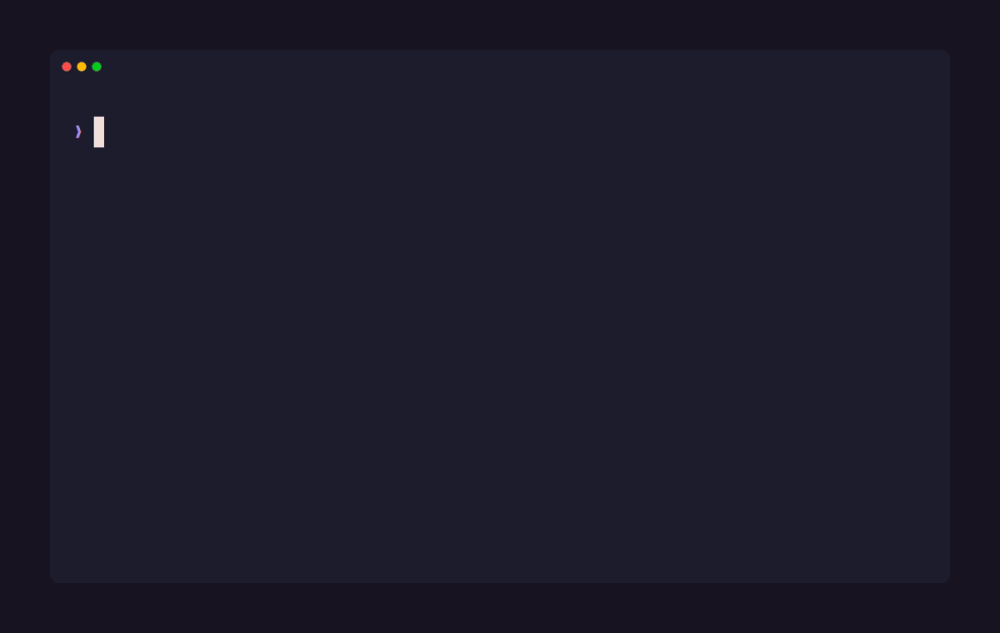

git log.NexusMem records what actually happened on your machine — shell commands and their exit codes, git history down to the patch of each changed file, project docs, optionally your assistant transcripts — into a local SQLite database, and serves back a ranked, token-budgeted slice of it on demand. Everything stays on disk. No account, no cloud, no telemetry.
# from inside any git repository
npx nexusmem init
npx nexusmem sync
Init, sync, status, and a query — recorded against NexusMem's own repository.

Nothing here is summarized by a model on the way out. The ranker just decides what not to send.
$ nexusmem query "windows spawn failure" Relevant history for: windows spawn failure - 2026-08-09 fix: distinguish a failed git spawn from "not a git repository" readRepoInfo collapsed three unrelated failures into one error: git running and reporting the path is not a work tree, git not being installed, and the process failing to spawn at all. Dogfooding hit the third case in two separate sessions... - 2026-08-09 README.md — Before a tagged release - [ ] Retry on transient process-spawn failures on Windows
A commit, a shell command and a docs section compete on equal terms — BM25 and vector search, fused by rank.
A PSReadLine-first hook captures working directory, exit code and a real timestamp. A failed command is a stronger signal than a successful one.
Full commit history plus the patch of each changed file — what shipped, down to the lines that changed.
Markdown chunked at heading boundaries. Ask why a decision was made and get the actual rationale section back.
Opt-in. Links a failed command to whatever later resolved it, so its fix rides along in the same result automatically.
Opt-in, local Ollama model, ingest time only. One distilled node — what was decided and why — next to the raw exchanges.
query --all-projects searches every repo you've synced, tagged by source. Off by default, scoped when off.
End-to-end saving compares the packed context NexusMem sends against reading, in full, the files its own ranking identified as relevant.
Both clear the original >70% target, measured with a reproducible script
(scripts/benchmark.ts) anyone can re-run.
The file set each query is graded against comes from NexusMem's own ranking, not an
independent judge — this measures what packing saves once retrieval already picked a
candidate set, not whether that set was the right one. Full methodology in the README.
| Operation, ~530-node corpus, warm p50 | Time |
|---|---|
| BM25 retrieval (FTS5) | ~1.1 ms |
| Vector KNN (sqlite-vec) | ~3.2 ms |
| Fuse, rank, pack | ~0.6 ms |
| Query embedding (local Ollama) | ~55–77 ms |
| End-to-end hybrid | ~56 ms |
Stated plainly, same as the README — including the parts that make the pitch look worse.
Shell history without the hook is unscoped. Scraped history has no directory context and is attributed to whichever repo you ran sync from — a tail-window approximation, not a guarantee.
Japanese and Chinese depend on the vector pass. FTS5's tokenizer splits on whitespace, so languages without space boundaries get no useful BM25 recall.
Rebasing strands nodes. Rewritten history leaves nodes for unreachable commits. A targeted prune doesn't exist yet — sync --rebuild forces a clean re-scan.
Session-summary titles depend on a 3B model following instructions, which it does about a third of the time. The fallback keeps them specific, not elegant.
Cross-project recall favours breadth. Each repo's hits are fused by rank, so a project with only a mediocre match still contributes a result — there's no per-project quality weight.
Requires Node 22+ and git. Ollama is optional and only affects semantic search.
npx nexusmem init npx nexusmem sync npx nexusmem query "why did the retry fail"
{
"mcpServers": {
"nexusmem": {
"command": "npx",
"args": ["-y", "nexusmem", "mcp"]
}
}
}
.nexusmem/ in the current repository.